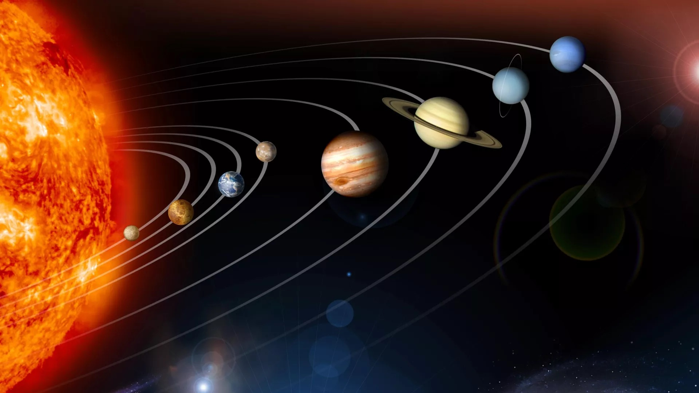
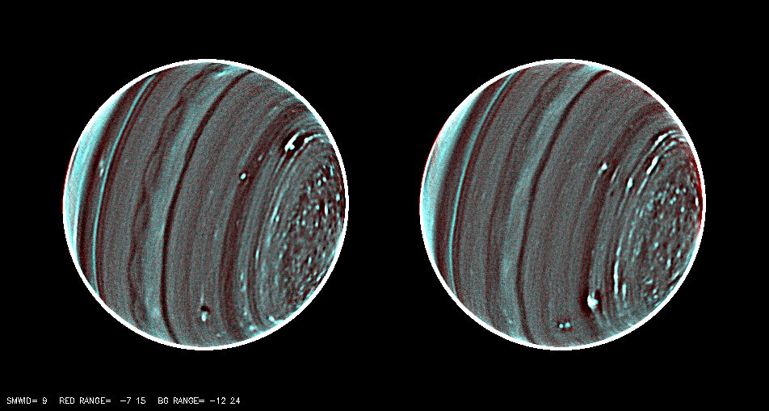
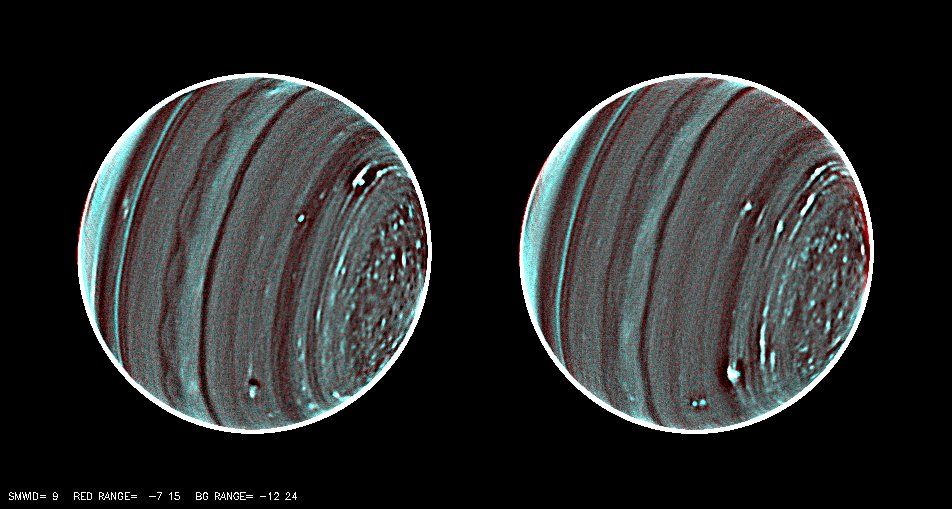
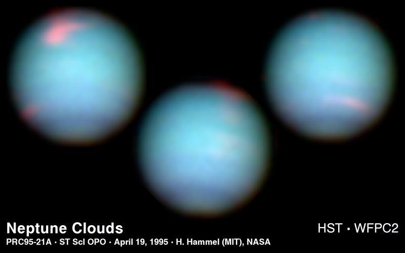
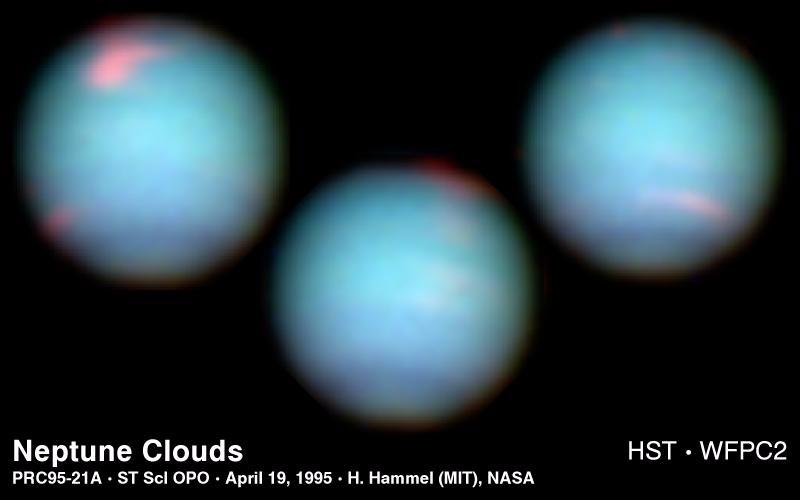

Wandering Beyond Blue Yonder
Ice Giant


 

 



The newest images, taken July 31 and Aug. 1, 1997 with NASA Hubble Space Telescope's Wide Field and Planetary Camera 2, show banded structure and multiple clouds.
Japan's Subaru Telescope captured this near-infrared image of Uranus and moons Miranda (top center) and Ariel (bottom left). The image, created with three different filters, shows methane, the dominant component of Uranus's atmosphere, as blue.
Taking its first peek at Uranus, NASA Hubble Space Telescope's Near Infrared Camera and Multi-Object Spectrometer (NICMOS) has detected six distinct clouds in images taken July 28, 1997.In these images, the blue exposure probes the deepest atmospheric levels. A blue color indicates clear atmospheric conditions, prevalent at mid-latitudes near the center of the disk. The green exposure is sensitive to absorption by methane gas, indicating a clear atmosphere; but in hazy atmospheric regions, the green color is seen because sunlight is reflected back before it is absorbed. The green color around the south pole (marked by "+") shows a strong local haze. The red exposure reveals absorption by hydrogen, the most abundant gas in the atmosphere of Uranus. Most sunlight shows patches of haze high in the atmosphere. A red color near the limb (edge) of the disk indicates the presence of a high-altitude haze. The purple color to the right of the equator also suggests haze high in the atmosphere with a clear atmosphere below. The five clouds visible near the right limb rotated counterclockwise during the time between both images. They reach high into the atmosphere, as indicated by their red color. Features of such high contrast have never been seen before on Uranus. The clouds are almost as large as continents on Earth, such as Europe. Another cloud (which barely can be seen) rotated along the path shown by the black arrow. It is located at lower altitudes, as indicated by its green color. The rings of Uranus are extremely faint in visible light but quite prominent in the near infrared. The brightest ring, the epsilon ring, has a variable width around its circumference. Its widest and thus brightest part is at the top in this image. Two fainter, inner rings are visible next to the epsilon ring.
Processing brings out Uranus' atmosphere.
A paired picture of Uranus, the sharpest, most detailed picture of the distant planet to date, reveals a raft of new details about the planet's enigmatic atmosphere. The north pole of Uranus (to the right in the picture) is characterized by a swarm of storm-like convective features, and an unusual scalloped pattern of clouds encircles the planet's equator. The infrared image was taken using the Keck II telescope in Hawaii.
This is an image of the planet Uranus taken by the spacecraft Voyager 2 on January 14th 1986 from a distance of approximately 7.8 milllion miles ( 12.7 million km ).
These NASA Hubble Space Telescope views of the blue-green planet Neptune provide three snapshots of changing weather conditions. The images were taken in 1994 on October 10 (upper left), October 18 (upper right), and November 2 (lower center), when Neptune was 2.8 billion miles (4.5 billion kilometers) from Earth.Hubble is allowing astronomers to study Neptune's dynamic atmosphere with a level of detail not possible since the 1989 flyby of the Voyager 2 space probe. Building on Voyager's initial discoveries, Hubble is revealing that Neptune has a remarkably dynamic atmosphere that changes over just a few days.The temperature difference between Neptune's strong internal heat source and its frigid cloud tops (-260 degrees Fahrenheit) might trigger instabilities in the atmosphere that drive these large-scale weather changes. In addition to hydrogen and helium, the main constituents, Neptune's atmosphere is composed of methane and hydrocarbons, like ethane and acetylene.
This dramatic view of the crescents of Neptune and Triton was acquired by Voyager 2 approximately 3 days, 6 and one-half hours after its closest approach to Neptune (north is to the right).Color was produced using images taken through the narrow-angle camera's clear, orange and green filters. Neptune does not appear as blue from this viewpoint because the forward scattering nature of its atmosphere is more important than its absorption of red light at this high phase angle (134 degrees).
This wide-angle Voyager 2 image, taken through the camera's clear filter, is the first to show Neptune's rings in detail. The two main rings, about 53,000 km (33,000 miles) and 63,000 km (39,000 miles) from Neptune, are 5 to 10 times brighter than in earlier images. The difference is due to lighting and viewing geometry. In approach images, the rings were seen in light scattered backward toward the spacecraft at a 15-degree phase angle. However, this image was taken at a 135-degree phase angle as Voyager left the planet. That geometry is ideal for detecting microscopic particles that forward-scatter light preferentially. The fact that Neptune's rings are so much brighter at that angle means the particle-size distribution is quite different from most of Uranus' and Saturn's rings, which contain fewer dust-size grains. However, a few components of the Saturnian and Uranian ring systems exhibit forward-scattering behavior: The F ring and the Encke Gap ringlet at Saturn, and 1986U1R at Uranus. They are also narrow, clumpy ringlets with kinks, and are associated with nearby moonlets too small to detect directly. In this image, the main clumpy arc, composed of three features each about 6 to 8 degrees long, is clearly seen. This image was obtained when Voyager was 1.1 million km (683,000 miles) from Neptune. Exposure time was 111seconds. The Voyager Mission is conducted by JPL for NASA's Office of Space Science and Applications.
This image of the planet Neptune was obtained during the testing of the Narrow-Field adaptive optics mode of the MUSE/GALACSI instrument on ESO’s Very Large Telescope. A new adaptive optics mode called laser tomography makes extremely sharp images of distant objects possible.
This picture of Neptune was produced from the last whole planet images taken through the green and orange filters on the Voyager 2 narrow angle camera. The images were taken at a range of 4.4 million miles from the planet, 4 days and 20 hours before closest approach. The picture shows the Great Dark Spot and its companion bright smudge; on the west limb the fast moving bright feature called Scooter and the little dark spot are visible. These clouds were seen to persist for as long as Voyager's cameras could resolve them. North of these, a bright cloud band similar to the south polar streak may be seen.
Top Three Reasons We picked Our Topic
- A
- B
- C